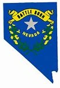

About Me
My name is Carin Gardner. My first name is pronounced Cahr-in, like a "car in" the garage. I was born in Virginia, but I moved to Henderson, Nevada with my husband in 1999. We raised our 5 children here. I have also lived in Hawaii and Utah. I served a mission for the Church of Jesus Christ of Latter-Day Saints in Copenhagen, Denmark. I am currently seeking an online degree through BYUI. I love puzzles of all sorts and can often be found listening to a Brandon Sanderson novel. Cheeseburgers bring me joy.
Henderson, Nevada
Nevada became the 36th state of the United States on October 31, 1864 during the Civil War. That is why it is referred to as the "battle born" state. Henderson is a city in Clark County, southeast of Las Vegas.
